The Prompt Is Still a Punch Card
If you only read one thing
- Three concepts frame the argument: channel (the physical transport), expression (how much meaning it can carry), and protocol (the rules/shape of the exchange) -- and while expression exploded with LLMs, the protocol stayed batch (c1, c5).
- Prompt engineering is reframed as packaging a complete request in advance, like a punch-card operator assembling a deck, rather than genuine interactivity; a real anecdote shows a voice assistant misinterpreting a side comment ('Hey Ted, come on in') as a turn addressed to it because the protocol has no concept of who's speaking (c3, c4, c6).
- Newer voice models demonstrate a different protocol: GPT Realtime 2 backchannels ('Mhm,' 'right'), and NVIDIA's Persona Plex research model stops, yields, and resumes mid-sentence when interrupted -- real-time turn-taking instead of batch request/response (c7, c8).
The talk defines channel as the physical transport carrying intent (keyboard, microphone, screen), expression as the range of meaning the channel can carry, and protocol as the rules and shape of the exchange. The keyboard layout in daily use traces to an 1860s patent, illustrating that today's default input device is an inherited legacy rather than a designed-for-AI choice.
“I'll give you three key concepts. The channel, the physical transport that carries your intent, expression, the range and richness of meaning the channel can carry, and the protocol, the shape or rules of this exchange”
▶ watch at 01:38“Here's the patent drawing for the layout we use every day. This patent's from about 1860.”
▶ watch at 02:40
The speaker argues prompting is structurally the same protocol as a punch card: assemble the whole request in advance, submit it, wait, then repeat if something's wrong. What's called 'prompt engineering' is reframed as a set of rules for packaging that batch request, comparable to a punch-card operator's skill at assembling a deck that wouldn't fail, rather than genuine mastery of interacting with the model.
“the protocol, prompting, is the protocol of a punch card. And the punch card's protocol is good old batch”
▶ watch at 06:18“We trade incantations. We've learned the magic words. That's the illusion. It feels like mastery, but it's the same sort of mastery a punch card operator had”
▶ watch at 07:52
Model capacity across reasoning, speech, vision, memory, and planning has risen sharply while the interface protocol has stayed flat -- still a box and a submit button. A concrete example: the speaker's co-founder said 'Hey Ted, come on in' to a person while a frontier voice-mode model was active; the model, having no concept of who a message is addressed to, treated it as a turn and replied, because that's the only thing a prompt-box protocol can do.
“Model capacity is shooting straight up. Reasoning, speech, vision, memory, planning, all curving upwards. The interface protocol, flat”
▶ watch at 09:55“He wasn't talking to the AI. But these models have no way to know that. So the AI did the only thing a prompt box can do. It took his speech as a turn and answered it”
▶ watch at 10:58
OpenAI's GPT Realtime 2, released in late May, added backchanneling sounds like 'Mhm' and 'right' to its voice mode. NVIDIA's research model Persona Plex, demoed live, stops mid-sentence when interrupted, yields the floor, and picks the thread back up afterward -- described as real turn-taking, listening and speaking at once, rather than batch request/response.
“OpenAI released GPT real-time 2 in late May and started trying it for their voice mode as well. It backchannels now. It goes, "Mhm." and right”
▶ watch at 12:00“Personal Plex stops. It yields. It picks the thread back up. That's real turn taking, listening and speaking at once in real time”
▶ watch at 13:02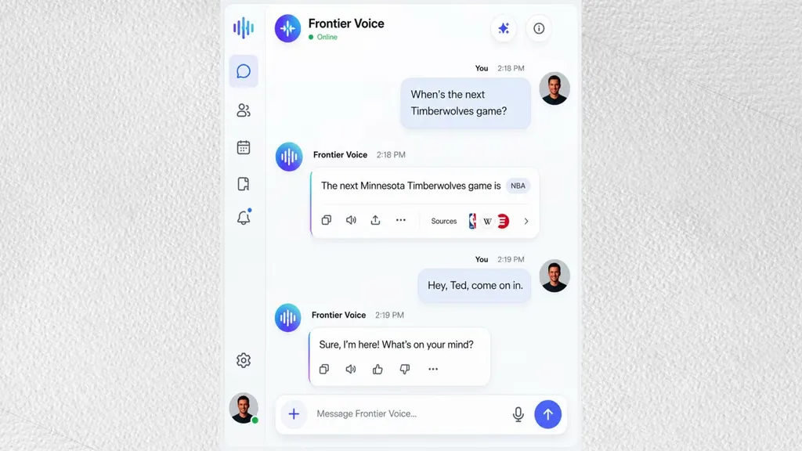
Citing MIT's Sherry Turkle on conversation as humanity's most human and humanizing capacity, the speaker argues the design question should shift from improving prompts to asking what burden is still being placed on humans only because machines used to be too limited to carry it themselves.
“It needs to become what burden are we still putting on humans only because the machine used to be too limited to carry that burden itself”
▶ watch at 17:50“Sherry Turkle at MIT puts it very well. Conversation is the most human and humanizing thing we do. It's one of humanity's superpowers”
▶ watch at 09:00Commentary (ours)
The Persona Plex and GPT Realtime 2 examples are both narrow voice-mode demos, not general-purpose text interfaces, so the punch-card critique is strongest for voice/agent products and less obviously actionable for teams still shipping a plain chat box (ours).


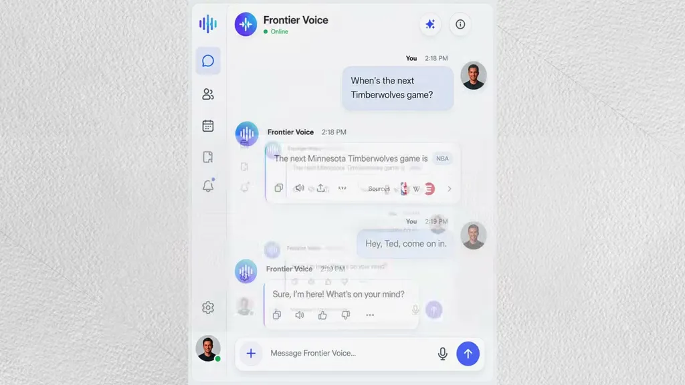
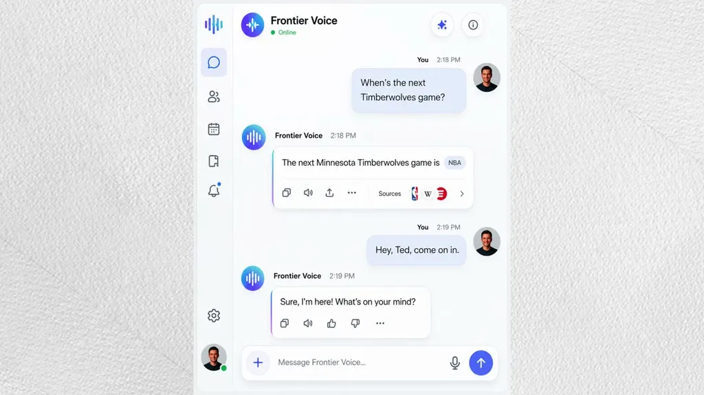
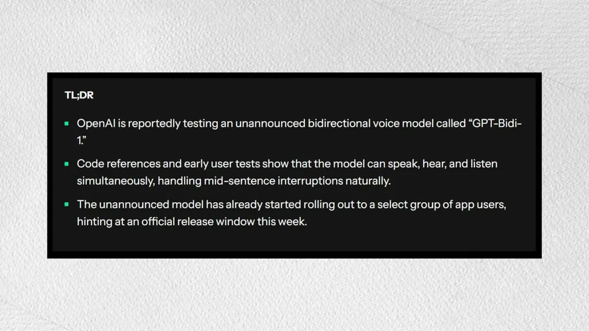
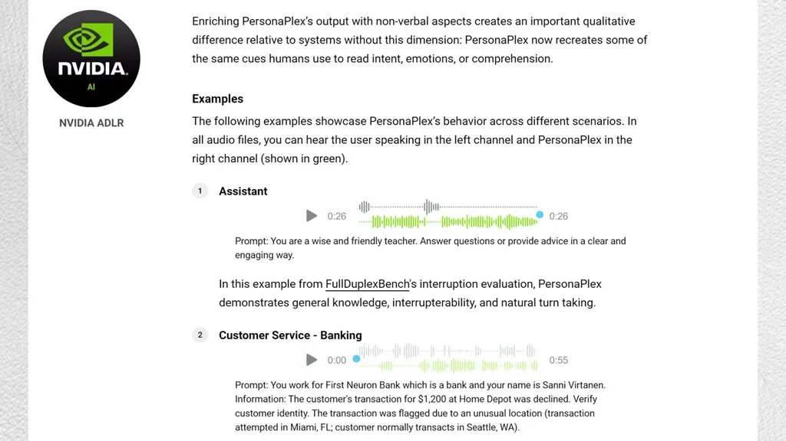
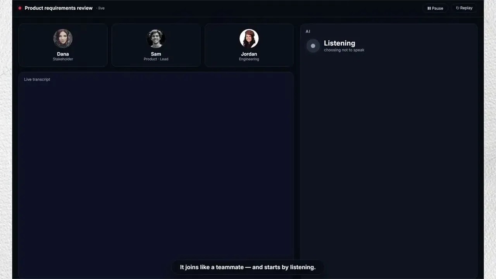
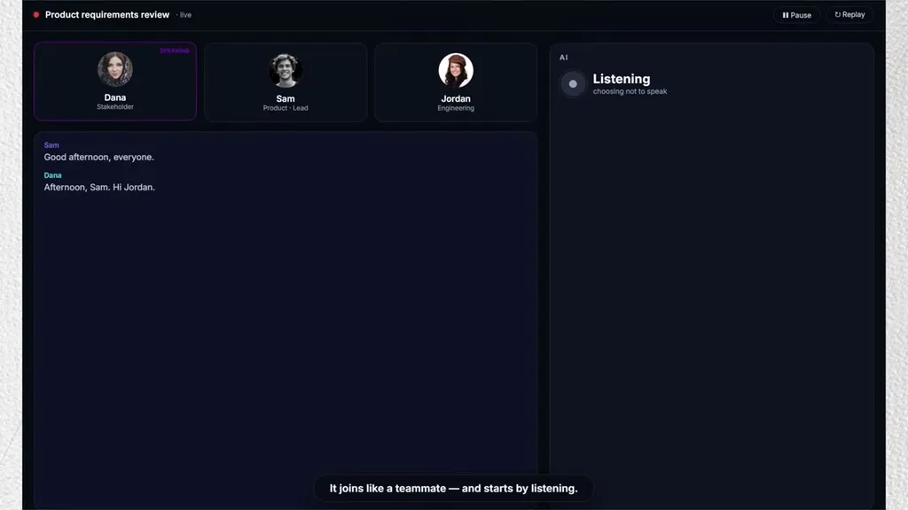
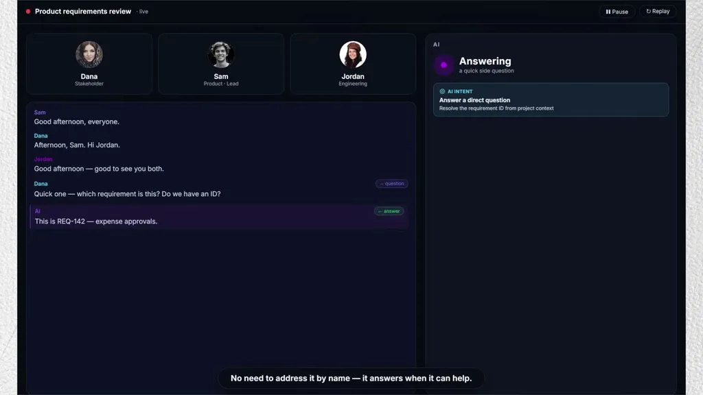
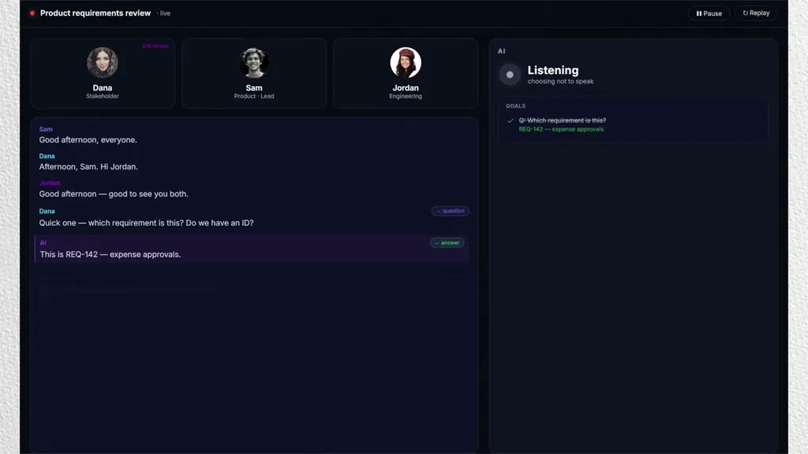
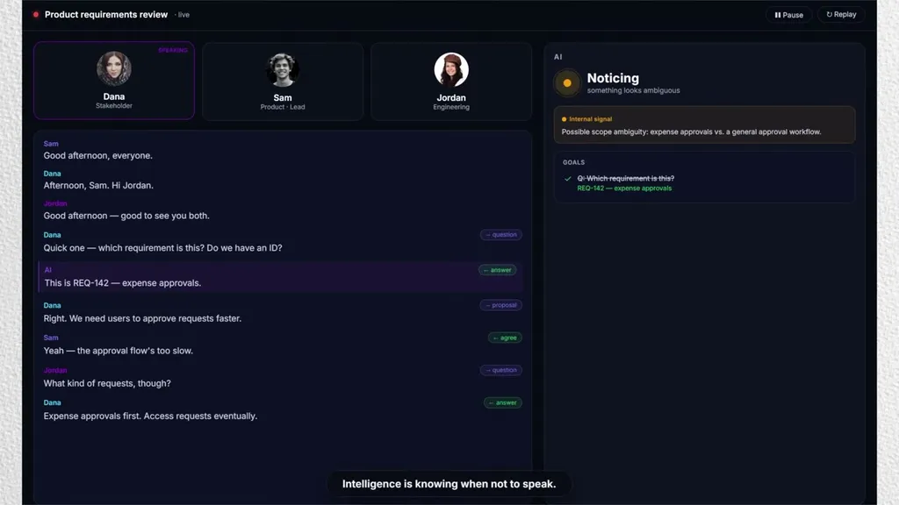
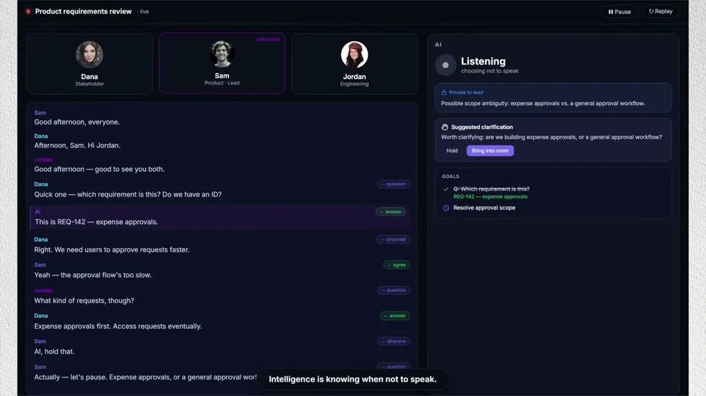
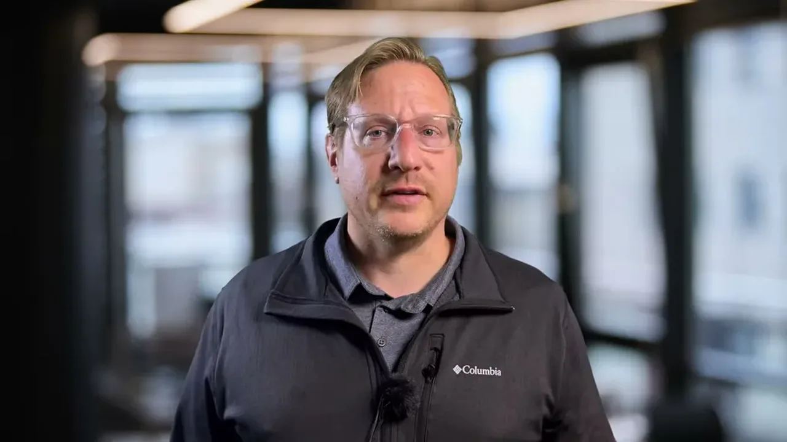
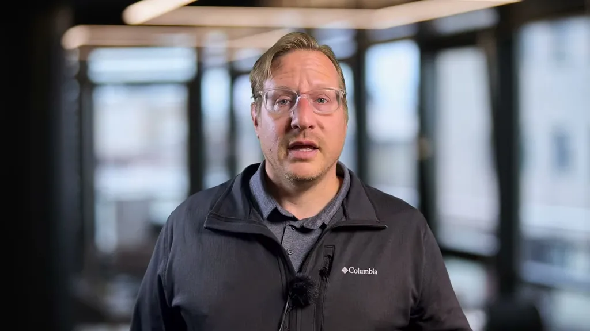
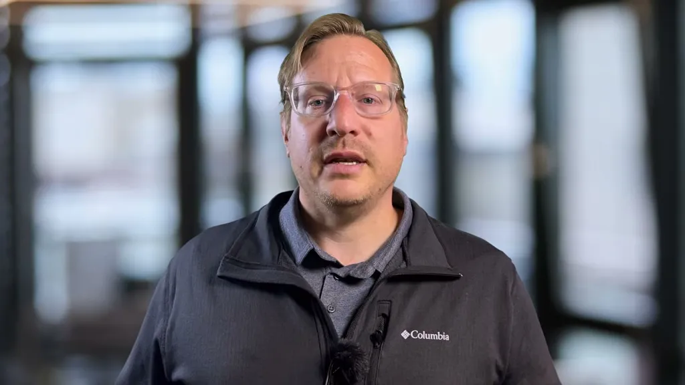


Underlying detail — every claim, typed and timestamped (10)
| Stance | Claim | t |
|---|---|---|
| asserts | The talk uses three concepts to analyze AI interfaces: channel (the physical transport), expression (the range of meaning it can carry), and protocol (the rules of the exchange). | 01:38 |
| asserts | The everyday keyboard layout traces to a patent from about 1860, an inherited legacy device. | 02:40 |
| warns | The prompting protocol is structurally the same as a punch card's batch protocol: assemble, submit, wait. | 06:18 |
| warns | Prompt engineering is a set of rules for packaging a batch request, comparable to a punch-card operator's deck-assembly skill, not true interactive mastery. | 07:52 |
| warns | Model capacity across reasoning, speech, vision, memory, and planning is rising sharply while the interface protocol has remained flat. | 09:55 |
| asserts | A frontier voice-mode model answered a side comment ('Hey Ted, come on in') as if it were a turn addressed to it, because the protocol has no concept of who's speaking. | 10:58 |
| asserts | OpenAI released GPT Realtime 2 in late May and its voice mode now backchannels with sounds like 'Mhm' and 'right.' | 12:00 |
| asserts | NVIDIA's Persona Plex research model demonstrated real turn-taking, stopping mid-sentence when interrupted, yielding, and resuming the thread afterward. | 13:02 |
| recommends | Interface design should ask what burden is still placed on humans only because machines used to be too limited to carry it themselves. | 17:50 |
| asserts | MIT's Sherry Turkle describes conversation as the most human and humanizing thing people do, one of humanity's superpowers. | 09:00 |
Machine-readable copy embedded in this page (script#ontology) and in the corpus ontology.